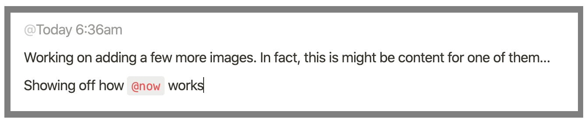
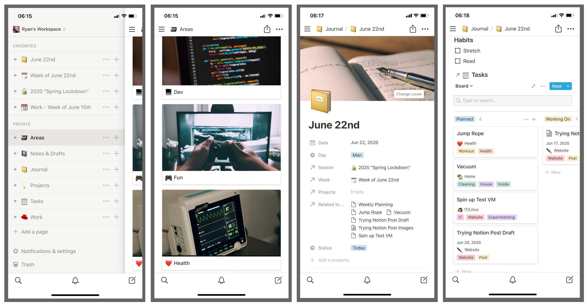

Over the past year or two, my notes and planning systems have been a bit of a jumble. It started when I attempted to switch everything to joplin notes… only to eventually switch back to org-mode (for my work notes) a few months later. Around that same time, I also started using trello to organize my personal and home life task boards. This system has worked well, but feels very disjointed. My notes, goals, and tasks are spread all over the place. This might all be about to change. I’ve started using Notion.
Quick History
Before diving into my experience with Notion, lets first describe in more detail the system I’m coming from.
Previous System
{kind=link}
Most recently, my personal and professional notes, and task planning systems have consisted of three applications: Trello, Emacs (org-mode), and Joplin.
Trello: I had several boards for planning my weekly, monthly, and multi-month personal tasks (including household ones). I also maintained a few boards to keep track of goals and projects ideas (ex: future website posts, books to read, training courses to take, etc).
Emacs org-mode: For my professional work life, I completed all the same tasks I listed under the trello section, using emacs instead. I would write down my tasks, and log quick notes and thoughts under each one while I was working on it. Logging helps me think through problems, and serves as a reference later. While I could log notes into Trello cards, it wasn’t nearly as easy to quickly open up and record a stream of consciousness, as it is was in org mode.
Joplin: I previously attempted to make Joplin my universal planning system, but it failed. It was a bit messy for a universal system, and lacked a board style layout for my goals and task planning (what Trello or even my ry-org-scrum package provide). That said, it was a great cross-platform notes application… so I continued to use it for that. Any personal or work note that wasn’t directly related to a single task card was stored in Joplin.
Issues with the system

While this system worked, it does some issues.
Couldn’t share items across applications
The biggest issue I had with this framework was that it was made from several disconnected systems. This meant that my notes and information were spread all over the place, and not linkable. I tried to keep notes and task logs separate, but while working on projects I often wanted to create longer, stand-alone, reference notes related to a task. With this setup, I couldn’t easily have the two items reference each other.
Had to configure each application… on every device
I have automated my emacs setup, but both joplin and emacs still required me to manually configure their sync solutions. Additionally, while Trello’s minimal setup of ‘just login’ seems simple enough, even this can quickly become tedious when doing it for multiple applications at a time… on several devices… some of them phones.
Not accessible beyond my computers
Lastly, my main issue was that apart from Trello, these systems weren’t really accessable from devices beside my own. In fact Emacs wasn’t even available on my mobile devices. While good from a security standpoint, I don’t like having all my notes and information only available when I sit down at a desktop. If I’m working on a family member’s machine, or in a fresh VM (without a shared clipboard), I want to be able to access my notes from a private browser tab. I also like to move cards across my task board from my phone as I complete them throughout the day.
Desires
With these issues defined, what is it that I actually want to see in my note taking and task organization system?

- Consolidated into one system: I don’t want to setup multiple apps and logins on all my systems.
- Cross platform: Despite only wanting a single system, I want it supported on all my devices, including mobile.
- Task board support: I really enjoy moving and displaying my task items in a board view.
- Normal notes too: In addition to task cards, I also want support for traditional, stand-alone notes. Ideally tasks can be linked to notes, but the notes don’t have to be task-bound.
- Easy to jump in, add a log note, and get out: I love this in org-mode. I need the ability to quickly jump into a task, hit a keyboard shortcut to auto-insert a time-stamp, and write a log note.
Notion
{kind=link}
Notion might be my solution. The Notion website states that it is an “All-in-one workspace. Write, plan, collaborate, and get organized — all in one tool”. Having used it as my lone system over the past several weeks, I think agree.
What I like so far
FLEXIBLE: This cannot be emphasized enough. Notion is extremely flexible, providing the tools to setup your own system, rather than being a defined system itself. Want just a pile of markdown-ish notes? Fine. Want to create endless clusters of relational databases? Go ahead. This endless flexibility makes Notion what I would consider to be the Emacs org-mode for
normalreasonable people.Easy logging using
@now: Easy logging usingNotion has the ‘easy logging’ feature I wanted. I just have to type@now@now, hit enter, and it auto auto-inserts a dynamic date and time (the ‘today’ changes to ‘yesterday’, and eventually the date as time passes).Databases: Databases are a compelling tool that are the backbone of a powerful notion setup. They allow collections of data to be linked, sorted, and filtered. Databases themselves have several notable features worth mentioning:
- Multiple view methods for the same data: Database items can be displayed in different views. These include tables, boards, galleries, calendar, and lists.
- Views can be filtered and sorted using property rules: Properties can be also marked as hidden, and any custom changes to the data view can be saved. This makes it easy to flip through different views to get a better picture of the information.
- Linkable: A database can be embedded in a page as a ‘linked database’. This is a database that points to an already existing one, and any changes to it also occur in the original DB. However, the linked databases have their own saved and default views.
Templates: Templates are another convenient feature. A specific page layout can be defined as a template, which new pages can then be created from. For example, I have weekly templates that contain all the tasks and linked databases for that week automatically configured. So when setting up a new week, I can simply create a new page from the template and fill in some information. Done.
Accessible from all my devices: 
Notion views in iOS. Navigation, my ‘Areas’ card view, a daily log page’ properties, and a task ‘board’ view.Notion has desktop applications for macOS and Windows, as well as mobile apps for iOS and Andriod. Additionally, it functions well as a webapp, which made it easy for me to create a nativefier build of it to run on my Linux systems.
Free, and affordable for pro: When I started using notion, the free tier was limited to 1000 blocks, but since then they have made the personal tier free without a use limit! There is still a Pro version with fancy features (like revision history), but even that is offered at a reasonable price.
{kind=link}
{kind=link}
Downsides/Concerns
{kind=link}
- All my eggs in one basket: My biggest concern with Notion, is that I am throwing everything into a single service which I now rely on. That is a huge risk. Fortunately, Notion does make it extremely easy to export a workspace, which eases my fears a bit. I need to test this out, and maybe make it a habit to periodically do it as a backup.
- A bit of a steep learning curve: All the flexibility and power means it can take a bit of trial and error to setup a system that works for you. While overwhelming at first, I don’t find it to be not that big of an problem. I am coming from using mostly emacs after all :P
- Lacks a cheaper ‘Family’ Plan: I’m ecstatic that they made the personal plan free, but I would still love to see a ‘Family’ plan that would allow my wife and I to have shared collaborative pages. I know this is what the teams version provides, but we don’t need all the other advanced features, and the price ends up being a bit steep for what we would want.
Conclusion
In summary, I’ve found Notion to be amazing. I’ve had to redo my setup twice already as I’ve started to better understand more powerful features, but every time it has been worth it. Notion appears to be fitting my needs perfectly, and it keeps getting better every day as I continue to tweak and perfect it.
Switching Hugo's Markdown Handler